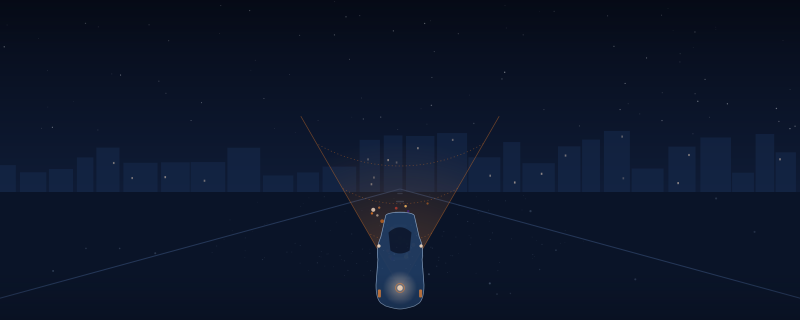
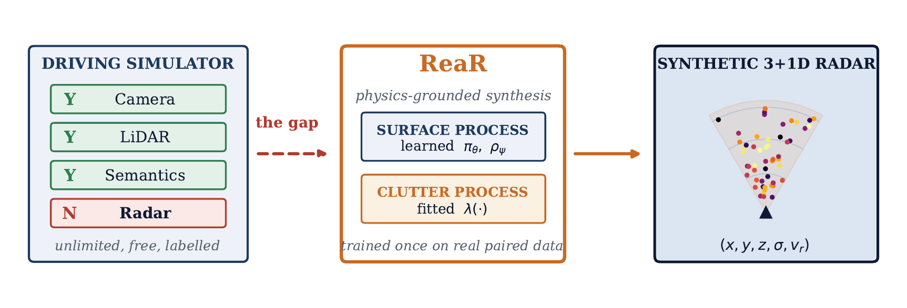
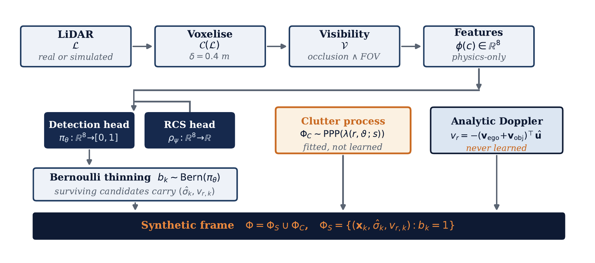
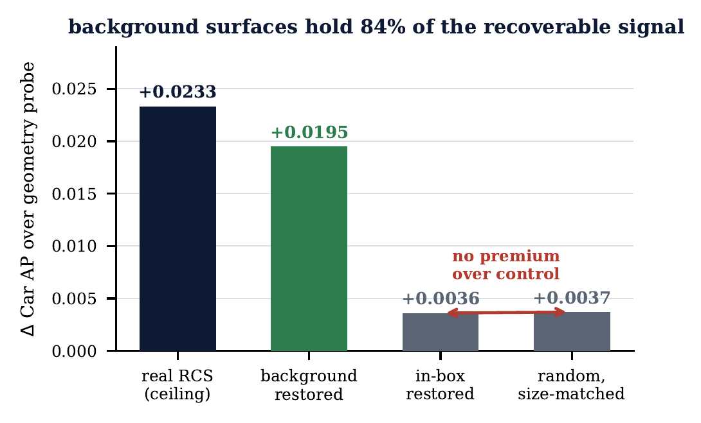
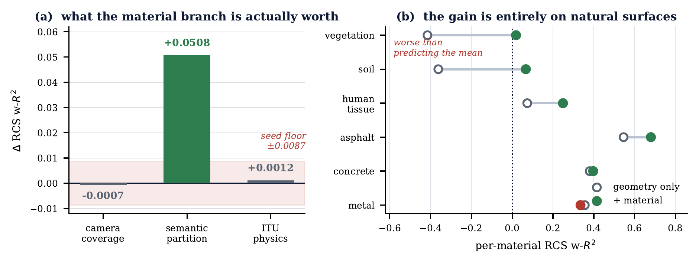
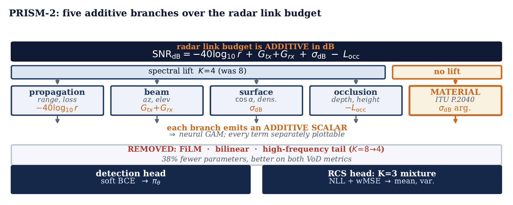
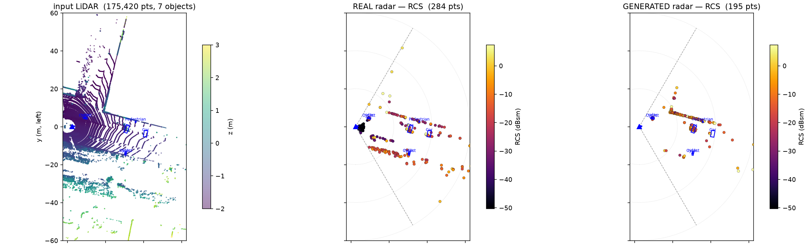

Where Is the Reflectivity?.
Localising and encoding the missing signal in LiDAR-to-radar point cloud generation — a physics-guided generator used as an instrument to find out where the reflectivity a detector needs actually lives.

Radar stays reliable through fog, rain, and darkness — and is the one modality simulators can't render, because a return depends on material and sub-wavelength surface properties no rasteriser tracks. ReaR supplies it as a learned, physics-constrained surrogate.
Radar for simulators that were never built to have any
ReaR learns only what physics leaves undetermined — detection likelihood and reflectivity — computing visibility and Doppler exactly. We then use it as an instrument: a channel-attribution test with a fixed detector localises the missing signal, a material branch recovers a large part of it, and a derangement control establishes precisely which part does the work.
Compute what physics determines. Learn only the rest.


Exact, not learned
Range, angle, occlusion, and Doppler — computed and hard-constrained.
Learn only the residual
Detection and reflectivity — the two things LiDAR can't see.
Validate against a null
Every fidelity statistic paired with a structure-destroying baseline.
Where does the missing reflectivity actually live?
We hold geometry byte-identical and swap one channel through a fixed detector, so attribution is exact — nothing is retrained. The detector turns out to be ~98% RCS-dependent.

Not a distributional gap
Restoring the real RCS spread with zero per-point information buys nothing.
Noise makes it worse
Residual-scale noise improves the marginal and costs −0.0102 Car AP.
A coverage failure
A prior negative on object-class labels was coverage, not information.
Semantic material priors from an international standard
Only one source covers road, facade, vegetation and poles densely: RGB semantics. Each class maps to a material mixture, converted to electromagnetic descriptors via ITU-R P.2040-4 at 77 GHz.

With the material→constant table deranged, the gain survives at +0.0501. The ITU constants themselves add +0.0012 — inside the floor. They are a compact, transferable encoding of the semantic partition, not an additional source of information. Saying so precisely is what the control was for.
The gain's location corroborates the mechanism: on vegetation, geometry-only RCS regression scores −0.415 w-R² — worse than predicting the mean — and material lifts it by +0.433. A bush is geometrically a solid object and radiometrically almost nothing, and only a semantic label separates the two. On metal and concrete the gain is zero.
PRISM-2: a failure held-out testing cannot see
The radar link budget is additive in decibels, so the head is a neural GAM over disjoint physics groups — with material entering as the σdB term's missing argument.

Diagnosed by roughness
Our prior head was smoother in-domain yet 1.4× rougher where deployed. The metric needs no ground truth.
A hash outside its support
32 oscillations across the IQR; the deployment shift rotates that channel 9–29 full periods.
Strictly better
Both in-domain metrics, 2.8× less input-sensitive, 27% smoother on deployment — at 38% fewer parameters.
Fidelity on real, held-out radar
Measured on View-of-Delft's full 413-frame test split — the only domain with real paired LiDAR–radar supervision.
6 of 7 pre-registered structural criteria pass · 9 of 13 null-normalised distributional tests pass · every threshold fixed in writing before the run

None of it transfers — and we can say why
The generator-side gain is real and large. It does not reach the detector, and we report that as a primary result rather than a limitation.
Injecting noise at the residual scale makes the RCS marginal more realistic while making the detector worse. Optimising distributional fidelity can actively remove usable signal — which is why we report a negative with a mechanism rather than a fidelity score.
What this work adds
A channel-attribution instrument with a fixed detector
Localisation: background carries 84% of the headroom
Exclusion of the distributional explanation
A material feature from ITU-R P.2040-4
A negative on the physics, by derangement control
PRISM-2, selected on two axes
BibTeX
@article{anand2026rear,
title = {Where Is the Reflectivity? Localising and Encoding the Missing
Signal in {LiDAR}-to-Radar Point Cloud Generation},
author = {Anand, Vivek and Lohani, Bharat and Mishra, Rakesh},
journal = {IEEE Robotics and Automation Letters (RA-L)},
year = {2026},
note = {Submitted}
}